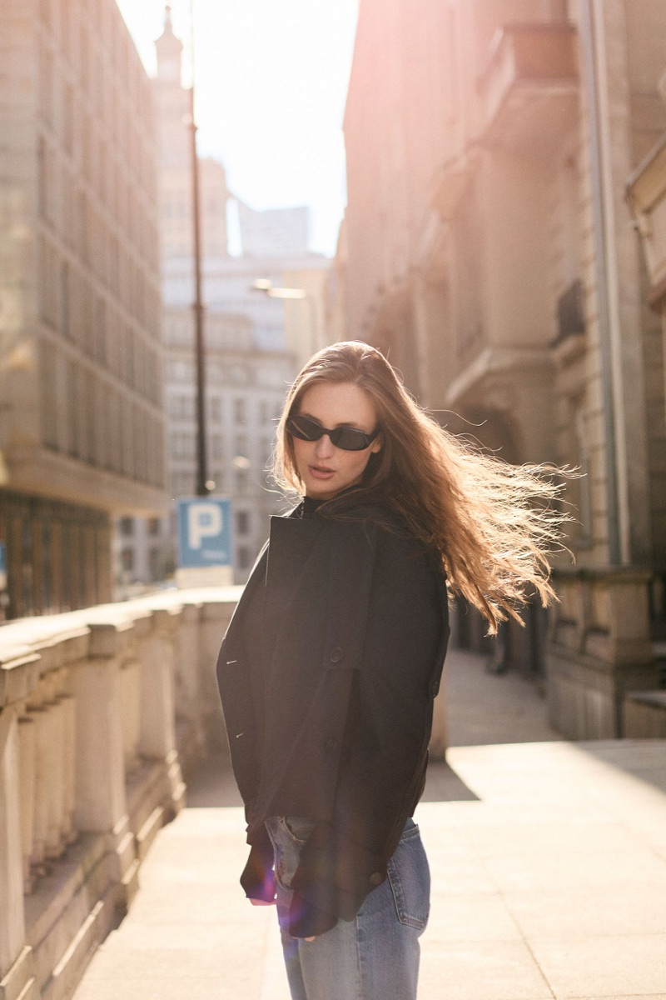
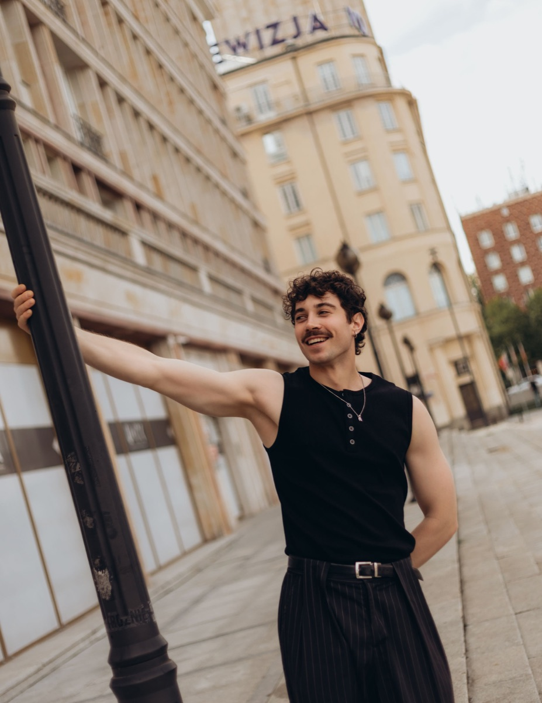
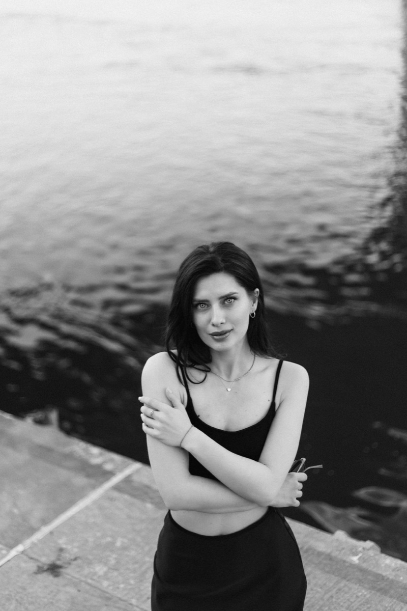
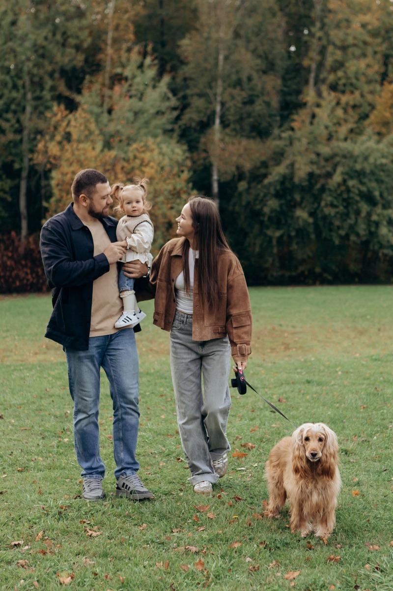
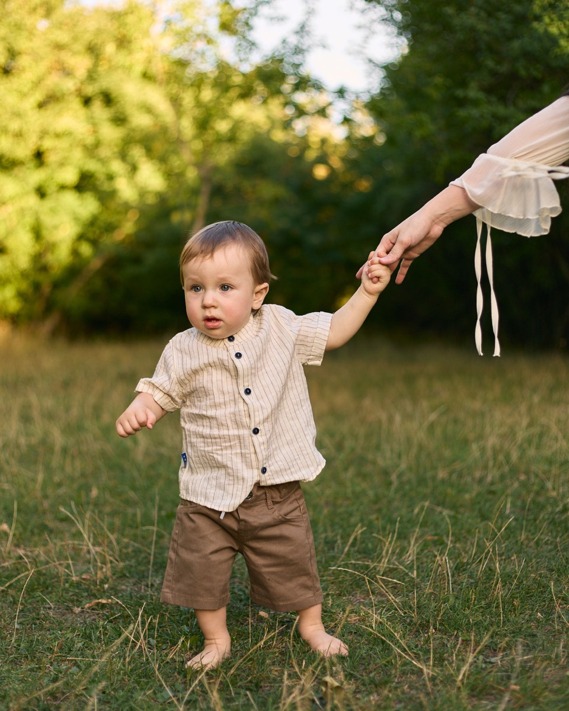
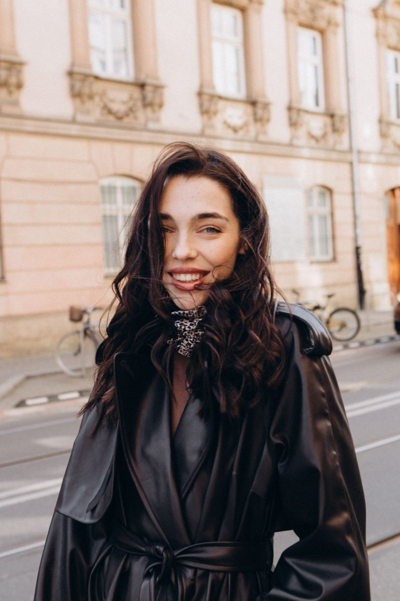

Ilona Napopil — fotografia













Miło Cię poznać!
Mam na imię Ilona — oto kilka słów o mnie.

Jestem fotografką, dla której aparat to coś więcej niż narzędzie — to sposób na chwytanie piękna, ulotnych emocji i prawdziwej esencji życia. W swojej pracy łączę dbałość o detale z zamiłowaniem do opowiadania historii. Tworzę zdjęcia, które poruszają i zostają z Tobą na lata.
Zapraszam do mojego świata.
Ile zdjęć otrzymam?
Łapanie autentycznych chwil i emocji to moja pasja. W ramach sesji otrzymujesz 60 zdjęć z korektą kolorystyczną, z czego 20 kadrów trafia do retuszu. Dodatkowe ujęcia retuszowane możesz dokupić po indywidualnym ustaleniu.
Czy dojeżdżasz na sesje w inne miejsca?
Tak, jak najbardziej! Na co dzień pracuję w Katowicach i Krakowie, ale z przyjemnością dojadę w dowolne miejsce na sesję, ślub czy wydarzenie. Koszt dojazdu ustalany jest indywidualnie w zależności od lokalizacji.
Jak zarezerwować termin?
Wystarczy, że napiszesz do mnie wiadomość na Instagramie lub przez komunikator. Wspólnie omówimy pomysły na lokalizację, wybierzemy dogodny termin i zarezerwujemy Twoją sesję.